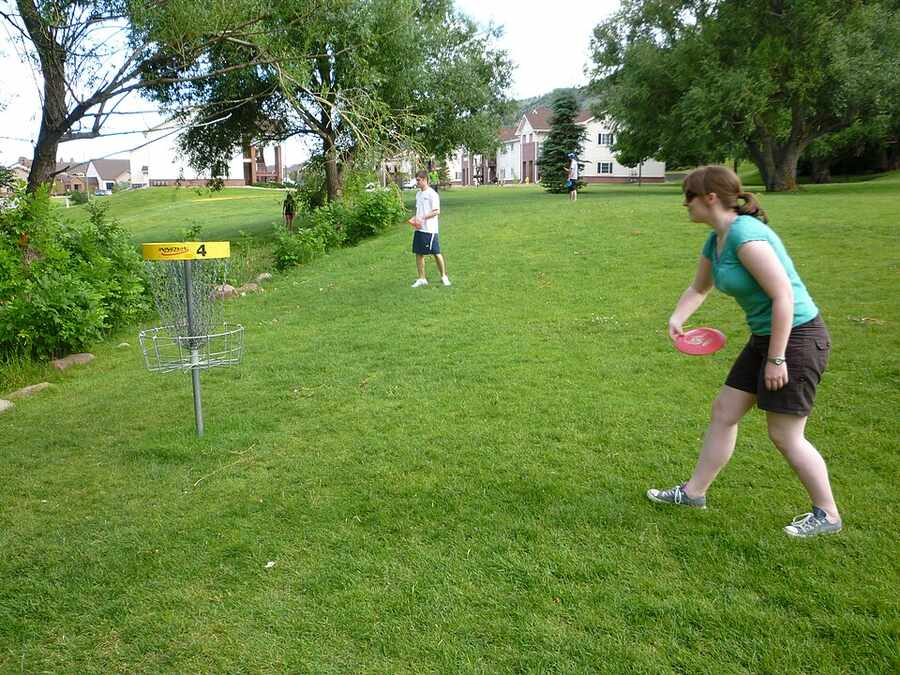

Basic Rules

- Each hole begins with a throw from the tee area.
- Players throw toward the basket until the disc lands in the target.
- Every throw counts as one stroke.
- The player farthest from the basket throws next.
- The goal is to finish each hole in the fewest throws possible.
- The player with the lowest total score at the end of the round wins.
- Players usually continue from the spot where their previous throw landed.
- Most courses have 9 or 18 holes that are played in order.